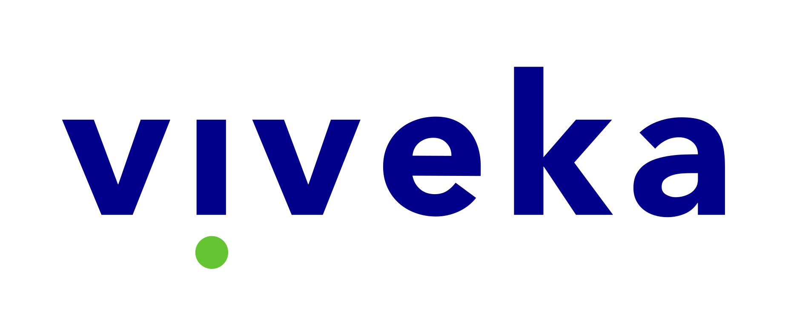

Corporate transformation & startup-corporate collaboration
Prepared for [Client] · June 2026 · Confidential
This starter shows every core component wired to the design tokens. Edit values in
tokens/tokens.css and everything here updates — that is the whole point of the system.
| Program | Applications | PoC Rate |
|---|---|---|
| Corporate Accelerator A | 320 | 91% |
| Public Innovation B | 540 | 78% |
| Leadership Cohort C | 120 | — |